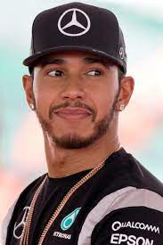
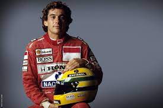
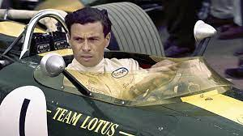
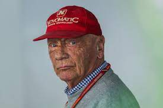
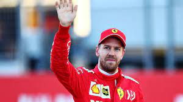
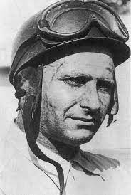
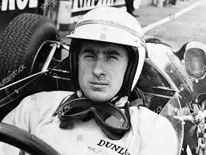
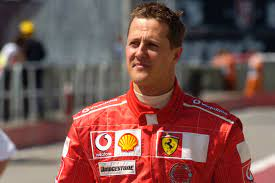
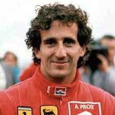

<!DOCTYPE html>

<html>
  <head>
    <meta charset="utf-8">
    <title>Le pilotes de la formule 1 qui ont marqué l'histoire</title>
	<link rel="stylesheet" href="style/style.css">
  </head>
</html>


<h1>Les Pilotes de Formule 1 qui ont marqués l'histoire</h1>
<h2>Depuis le debut de l'histoire de la Formule 1 de nombreux pilotes on rouler dans ces voiture aussi impressionante que puissante.</h2>
<h3>Mais qui sont les pilotes qui ont marqués l'histoire de la F1?</h3>
<h4>Je vous est préparez la liste des 10 pilotes qui ont marqué l'histoire de la f1 selon moi.</h4>

<p>
		<marquee align="center" height="700" scrollamount="20">
		
		
		
		
		
		
		
		
		
		</p></marquee>

<h1> <a href="niki lauda.html"> Niki Lauda</h1>
<h2><p>Date de naissance:22 février 1949 (Vienne)<p/>
<p>Date de décès :20 mai 2019 (à 70 ans) (à Zurich)</p>
<p>Nationalité:	Autrichienne</p>
<p>Titres mondiaux : 3</p>
<p>Courses gagnées : 25</p>
<p>Podiums : 54</p>
<p>Champion du monde :1975, 1977 et 1984</p>
<p>équipe pour lesquelles il a couru: March,BRM ,Ferrari,Brabham,McLaren</p></h2>

<h1> <a href="lewis.html">  Lewis Hamilton</h1>
<h1><p>Date de naissance:	7 janvier 1985 (36 ans) (Angleterre)</p>
<p>Nationalité:	Britannique</p>
<p>équipe pour lesquelles il a couru:	McLaren,Mercedes</p>
<p>Pole positions 	103 (record)</p>
<p>Titres mondiaux : 7</p>
<p>Courses gagnées : 100</p>
<p>Podiums : 176</p>
<p>Champion du monde : 2008, 2014, 2015, 2017, 2018, 2019, 2020</p></h1>

<h1> <a href="senna.html"> Ayrton Senna</h1>
<h2><p>Date de naissance:21 mars 1960 (Sao Paulo, Brésil)</p>
<p>Date de décès:1er mai 1994 (à 34 ans) (Bologne, Italie)</p>
<p>Nationalité: Brésilien</p>
<p>Titres mondiaux : 3</p>
<p>Courses gagnées : 41</p>
<p>Podiums : 80</p>
<p>Champion du monde:1988, 1990 et 1991<p/>
<p>équipe pour lesquelles il a couru: Toleman,Lotus	,McLaren,Williams</p></h2>

<h1> <a href="jimclark.html"> Jim Clark</h1>
<h1><p>ate de naissance :4 mars 1936 (Ecosse)</p>
<p>Date de décès :7 avril 1968 (à 32 ans) (Hockenheim, Allemagne)</p>
<p>Nationalité :Britannique</p>
<p>Titres mondiaux : 2</p>
<p>Courses gagnées : 25</p>
<p>Podiums : 32</p>
<p>Champion du monde: 1963, 1965<p/>
<p>équipe pour lequelles il a couru: Lotus</p></h1>


<h1> <a href="vettel.html"> Sebastian Vettel</h1>
<h2><p>Date de naissance :3 juillet 1987 (34 ans) (Heppenheim, Allemagne)</p>
<p>Nationalité :Allemand</p>
<p>Titres mondiaux : 4</p>
<p>Courses gagnées : 53</p>
<p>Podiums : 122</p>
<p>Champion du monde 	2010, 2011, 2012, 2013<p/>
<p>équipe pour lequelles il a courru: BMW Sauber, Toro Rosso, Red Bull, Ferrari, Aston Martin</p></h2>
	

<h1> <a href="alonso.html"> Fernando Alonso</h1>
<h1><p>Date de naissance: 29 juillet 1981 (40 ans) (Oviedo, Espagne)
<p>Nationalité :Espagnol</p>
<p>Titre mondiaux: 2</p>
<p>Courses gagnées: 32</p>
<p>Podiums: 98</p>
<p>Champion du monde: 2005, 2006 </p>
<p>équipe pour lesquelles il a couru: Minardi, Renault, Mclaren, Ferrari, Alpine</p></h1>


<h1> <a href="michael.html"> Michael Schumacher</h1>
<h2><p>Date de naissance: 3 janvier 1969 (52 ans) (Allemagne, Hürth-Hermülheim)</p>
<p>Nationalité:	Allemand</p>
<p>Titres mondiaux : 7</p>
<p>Courses gagnées : 91</p>
<p>Podiums : 155</p>
<p>champion du monde:  1994, 1995, 2000, 2001, 2002, 2003, 2004</p>
<p>équipe pour lesquelles il a couru: Jordan, Benetton, Ferrari, Mercedes</p></h2>

<h1> <a href="prost.html"> Alain Prost</h1>
<h1><p>Date de naissance: 24 février 1955 (66 ans)(Lorette, France)</p>
<p>Nationalité: France</p>
<p>Titres mondiaux : 4</p>
<p>Courses gagnées : 51</p>
<p>Podiums : 106</p>
<p>Champuions du monde: 1985, 1986, 1989 et 1993</p>
<p>équipe pour lesquelles il a couru: Mclaren, Renault, Ferrari, Williams</p>

<h1> <a href="jackie.html"> Jackie Stewart</h1>
<h2><p>Date de naissance: 11 juin 1939 (82 ans) (West Dunbartonshire, Écosse, Royaume-Uni)</p>
<p>Nationalité: britannique</p>
<p>Titres mondiaux : 3</p>
<p>Courses gagnées : 27</p>
<p>Podiums : 43</p>
<p>Champion du monde: 1969, 1971, 1973</p>
<p>équipe pour lesquelles il a couru: Owen Racing,	Matra International, Tyrrell</p></h2>

<h1> <a href="fangio.html"> Juan Manuel Fangio</h1>
<h1><p>Date de naissance: 24 juin 1911 (Balcarce, Argentine)</p> 
<p>Date de décès: 17 juillet 1995 (à 84 ans) (Buenos Aires, Argentine)</p>
<p>Nationalité: Argentin</p>
<p>Titres mondiaux : 5</p>
<p>Courses gagnées : 24</p>
<p>Podiums : 35</p>
<p>Champion du monde: monde: 1951, 1954, 1955, 1956, 1957</p>
<p>équipe pour lesquelles il a couru: Alfa Romeo, Maserati, Daimler-Benz, Sud Americana</p></h1>


<body background="image/fondnoir.jpg">
<background-attachment:center center;>